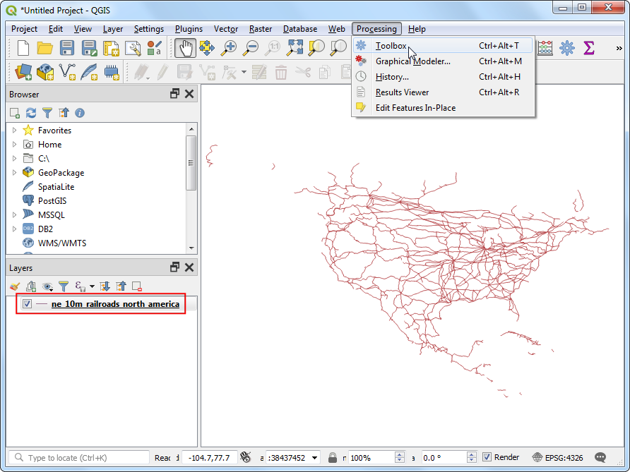
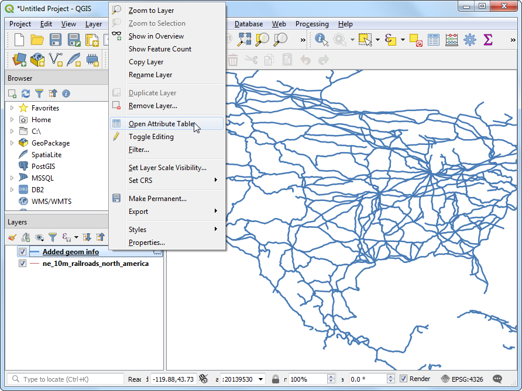
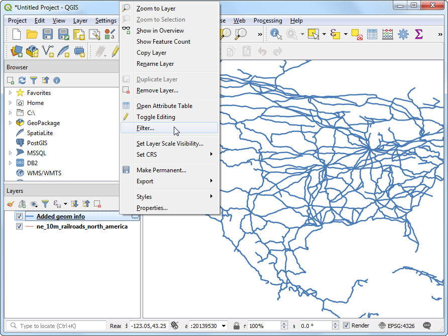

Çizgi Uzunluklarının ve İstatistiklerinin Hesaplanması (QGIS3)¶
QGIS, detayın geometrisine dayalı olarak uzunluk, alan, çevre vb. gibi çeşitli nitelikleri hesaplamak için yerleşik fonksiyon ve algoritmalara sahiptir. Bu eğitim, her detayın uzunluğunu temsil eden değeri içeren bir sütun eklemek için Geometri öznitelikleri ekle aracının nasıl kullanılacağını gösterecektir. .
Ödeve genel bakış¶
Kuzey Amerika’daki demiryollarının ait verilen çoklu çizgi katmanını kullanarak, Birleşik Devletler’deki demiryollarının toplam uzunluğunu belirleyeceğiz.
Öğreneceğiniz diğer beceriler¶
İfadeleri kullanarak detayları filtreleme
Sütunlardaki istatistikleri hesaplamak ve görüntülemek için :guilabel:’İstatistikler’ panelini kullanma.
Veriyi elde edin¶
`Natural Earth <http://www.naturalearthdata.com/downloads/10m-cultural-vectors/railroads/> “_ kamuya açık bir demiryolu veri setine sahiptir.
Portaldan North America supplement zip dosyasını indirin.
Kolaylık sağlamak için, veri setinin bir kopyasını doğrudan aşağıdaki bağlantıdan indirebilirsiniz:
ne_10m_railroads_north_america..zip
Veri Kaynağı : [NATURALEARTH]
Prosedür¶
Browser panelini kullanarak indirdiğiniz
ne_10m_railroads_north_america.zipdosyasını bulun ve genişletin.ne_10m_railroads_north_america.shpdosyasını kanvasa sürükleyin.

ne_10m_railroads_north_america` dosyasının Layers paneline yüklendiğini göreceksiniz. ABD’deki tüm demiryollarını temsil eden çizgilerden oluşan bir katman göreceksiniz. Her bir objenin boyunu hesaplamak için seçin.

‘Menü seçimi:’Vektör geometrisi -> Geometri öznitelikleri ekle’ algoritmasını arayın ve bulun. Başlatmak için çift tıklayın.

In the Add Geometry Attributes dialog, select
ne_10m_railroads_north_americaas the Input layer. The input layer’s Coordinate Reference System (CRS) is EPSG:4326 WGS84. This is a Geographic CRS with Latitude and Longitude as coordinates, WGS84 as ellipsoid and degrees as units. Because latitude and longitude don’t have a standard length, you can’t measure distances or areas accurately using planar geometry functions. Fortunately, QGIS provides a better way to compute distances using ellipsoidal geometry, which is the most accurate method for layers spanning large areas such as this. PickEllipsoidalas the Calculate using option. Click Run. Once the process finishes, click Close.

Not
Giriş katmanınız Projeksiyonlandırılmış KRS içindeyse, hesaplama için “Katman KRS’’ seçeneğini seçebilirsiniz. Yerel veya Bölgesel projeksiyonlandırılmış koordinat sistemleri, ilgi bölgelerinde bozulmaları en aza indirecek şekilde tasarlanmış olup; bu tür hesaplamalar için daha doğrudur.
Katmanlar panelinde yeni bir `Geom bilgisi eklendi’ katmanının yüklendiğini göreceksiniz. Bu, mesafe için yeni bir sütun eklenmiş girdi katmanının bir kopyasıdır. ``Geom bilgisi eklendi’’ katmanına sağ tıklayın ve :guilabel:`Öznitelik Tablosunu Aç`ı seçin.

Not
Geometri Özniteliği Ekle aracı, girdi katmanının nokta, çizgi veya çokgen olmasına bağlı olarak farklı öznitelik kümeleri ekler. Daha fazla ayrıntı için `QGIS belgelerine <https://docs.qgis.org/testing/en/docs/user_manual/processing_algs/qgis/vectorgeometry.html#add-geometry-attributes>’ _ bakın.
In the Attribute Table, you will see a new column called distance. This contains the length of each line feature in meters. Also note that the sov_a3 attribute which contains the country code for each feature. Close the Attribute Table window.

Artık tek tek demiryolu hattı segmentlerinin uzunluklarına sahip olduğumuza göre, toplam demiryollarının uzunluğunu bulmak için bunları toplayabiliriz. Ancak problem tanımının gerektirdiği gibi, Amerika Birleşik Devletleri’nde toplam demiryolu uzunluğuna ihtiyacımız var, sadece ABD’de bulunan bölümleri kullanmalıyız. Katmanı filtrelemek için sov_a3 sütunundaki ülke kodu değerini kullanabiliriz. ``Geom bilgisi eklendi’’ katmanına sağ tıklayın ve :guilabel: `Filtre`yi seçin.

:guilabel:’Sorgu Oluşturucu’ iletişim kutusuna aşağıdaki ifadeyi girin ve :guilabel:’Tamam’ seçeneğini tıklayın.
"sov_a3" = 'USA'
:guilabel:’Katmanlar’ panelindeki “Geom bilgisi eklendi’’ katmanının yanında katmana bir filtre uygulandığını belirten bir :guilabel:’Filtre’ simgesi göreceksiniz. Ayrıca, katmanın artık yalnızca Amerika Birleşik Devletleri için çizgi segmentleri içerdiğini görsel olarak da onaylayabilirsiniz. Şimdi toplamı hesaplamaya hazırız. :guilabel:’Öznitelikler Araç Çubuğu’ndaki :guilabel:’İstatistiksel özeti göster’ düğmesine tıklayın.

Yeni :guilabel: “İstatistikler” paneli açılacaktır. “Geom bilgisi eklendi’’ katmanını ve ``uzunluk’’ sütununu seçin.

Panelde görüntülenen çeşitli istatistikler göreceksiniz. İstatistiğin birimi “uzunluk” sütununun birimleriyle aynıdır - metre. Hesaplamayı bunun yerine kilometre kullanacak şekilde değiştirelim. :guilabel:’İstatistikler’ panelindeki alanlar açılır menüsünün yanındaki :guilabel:’İfade’ simgesine tıklayın.

Uzunluğu kilometreye dönüştüren :guilabel:’İfade Diyaloğu’ na aşağıdaki ifadeyi girin.
length / 1000
Görüntülenen :guilabel:’Toplam’ değeri, ABD’deki demiryollarının toplam uzunluğudur.